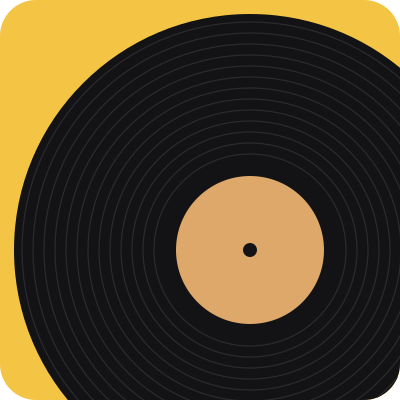
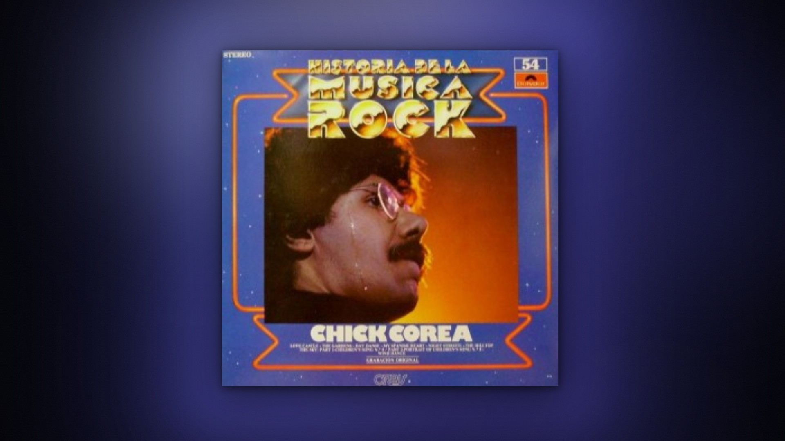
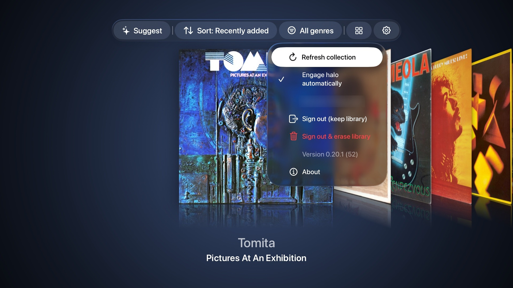
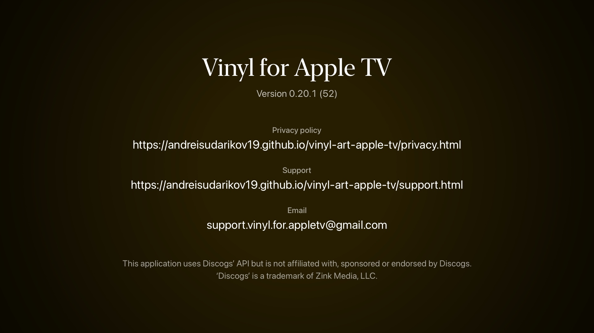

How to use
A tour of every screen, and what your remote does on each one.
Vinyl for Apple TV shows the records in your Discogs collection on your TV. This guide takes you through the app one screen at a time. For each screen you get a picture, a short explanation and a list of what the remote does there.
Not signed in yet? Get started takes you through signing in step by step. Come back here when your records are on screen.


Meet the remote
You only need two parts of the remote for this app: the clickpad, which is the round pad at the top, and the Back button just below it.
- 1Swipe up. Slide your thumb up across the clickpad.
- 2Swipe down. Slide your thumb down.
- 3Swipe left. Slide your thumb to the left.
- 4Swipe right. Slide your thumb to the right.
- 5Press the clickpad. Push the pad down until it clicks.
- 6Back. The ‹ button. It returns to the previous screen. The Apple TV looks after this button itself, so the app cannot change what it does.
Swiping moves the highlight: the cover or button that stands out on the screen. Pressing the clickpad opens or chooses whatever is highlighted.
Every drawing in this guide uses these same numbers, and shows only the ones that do something on that screen.
Covers in a row

When you first open the app, your records appear as a row of covers with one large cover in the middle. This layout is called CoverFlow.
The large cover is the highlighted record. Its artist and title sit underneath, and the background takes on its colours.
Swipe left or right to move through your collection, one record at a time. Press the clickpad to open the record in the middle.
The halo
Stop swiping for 60 seconds and a soft glow of colour from the cover appears. We call it the halo. If you would rather not see it, switch off Engage halo automatically in the settings menu.
Covers in a grid

Would you like to see more records at once? The Grid layout shows your covers in rows of seven.
The background takes on the colours of the highlighted cover. There is no halo in the grid.
To switch between CoverFlow and Grid, use the Layout button on the toolbar.
The toolbar

The toolbar is the row of buttons at the top of the gallery. To reach it, swipe up from the covers. In the grid, swipe up from the top row.
Here is what each button does, from left to right.
- SuggestCan’t decide? This opens a record picked at random. If you have chosen a genre, it picks from that genre only.
- SortChanges the order of your records. You can choose Recently added, which is the order the app starts with, or Artist, Album or Year.
- GenreShows only the records of one genre or style. Choose All genres to see everything again. This button appears only if your records have genre or style tags on Discogs.
- LayoutSwitches between CoverFlow, the row of covers, and Grid.
- The gearOpens the settings menu. It is the last button on the right.
Suggest, Sort and Layout appear once your library has records in it.
The app remembers your sort order and layout for next time. It does not remember the genre, so you see all genres again when you reopen the app.
The record screen

Press the clickpad on any record in the gallery to open it. You see its cover and details on the left, and its tracklist, the list of songs, on the right.
Sides
A vinyl record has songs on both of its faces. Each face is called a side. The side selector above the tracklist shows them, starting with Side A, and highlights the one you are looking at. Swipe left or right to change side.
The cover on its own
Swipe up to see the cover by itself, centred on a black background. This is the cover view. Swipe down to return to the tracklist.
When you change side in the cover view, a short message appears for 2 seconds.

The halo
In the cover view, the halo appears by itself after a short pause. Any swipe hides it, and it returns 3 seconds after your last swipe.
The tracklist has no halo. After 15 seconds without a swipe, the blurred background starts to drift.
To keep the halo off
- 1.Press Back to return to the gallery.
- 2.Swipe up to the toolbar, swipe right until the gear is highlighted, then press the clickpad. The settings menu opens.
- 3.Swipe to Engage halo automatically and press the clickpad. Check that the tick beside it is gone.
- 4.Press Back.
From now on the halo follows the Halo button, and it starts switched off each time you open the app. To use the button, open a record and swipe up to show the cover. Swipe up again until the Halo button under the cover is highlighted, then press the clickpad. The button is filled white when the halo is on, and plain glass when it is off.
Covers that improve
The app first shows the cover image from Discogs. When it finds a better one, it swaps it in, so a cover can change while you watch. It looks for better covers at MusicBrainz, an open music database, and the Cover Art Archive.
The settings menu

The settings menu is behind the gear, the last button on the toolbar. Swipe up to the toolbar, swipe right until the gear is highlighted, then press the clickpad.
Here is what each item does, from top to bottom.
- Refresh collectionUse this after you add or remove records on Discogs. The app reads your whole collection again. It adds new records, removes the ones you have taken off Discogs and updates the rest. You can follow the progress at the bottom of the gallery, for example
Refreshing… 120/800. - Engage halo automaticallyThis is on to begin with, and the halo appears by itself. When it is off, the halo shows only when you switch it on with the Halo button on the record screen.
- AccountShows the Discogs username you are signed in with.
- Sign out (keep library)Signs you out of Discogs on this Apple TV and keeps your library here. When you sign in again with the same account, your library is there at once.
- Sign out & erase libraryCarefulSigns you out and deletes the library from this Apple TV. It happens straight away, and the app does not ask you to confirm. Your collection on Discogs is not touched, and your layout, sort order and halo settings stay.
- Version and AboutThe app’s version number, then About, which opens the About screen.
Open a record on Discogs
Every record has its own page on discogs.com. The Apple TV has no web browser, so the app helps you open that page on your phone instead.
- 1.On the record screen, with the tracklist showing, select the line Data provided by Discogs under the cover details.
- 2.A QR code fills the screen, with the words
Scan with your phone. A QR code is a square pattern that a phone camera can read. - 3.Point your phone’s camera at the code and open the link it offers.
- 4.Press Back on the remote when you are done.

Controls
- 6Back. Returns to the previous screen.

The About screen
About is the last item in the settings menu. It shows the app’s name and version, the privacy policy, the support and email addresses, and the Discogs notice.
There is nothing to select on this screen. The addresses are plain text for you to type into a phone or computer, because the Apple TV has no web browser.
Controls
- 6Back. Returns to the previous screen.